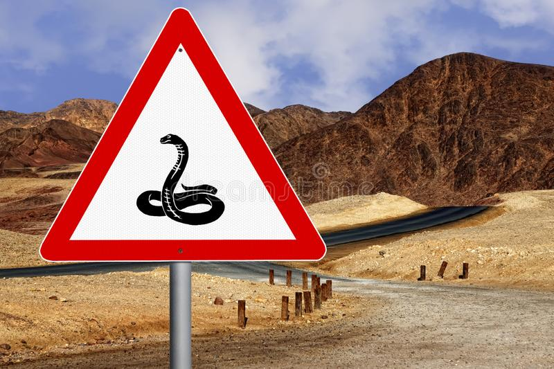
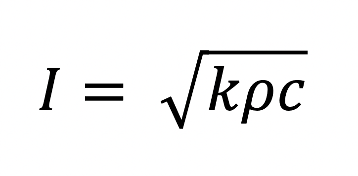
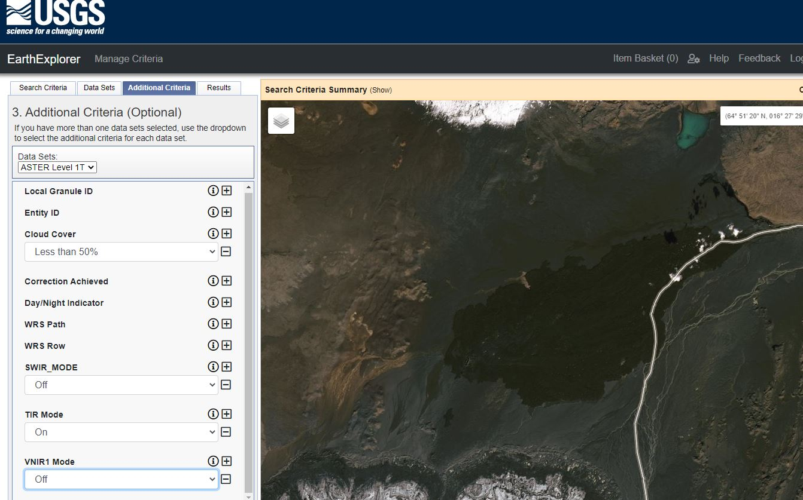
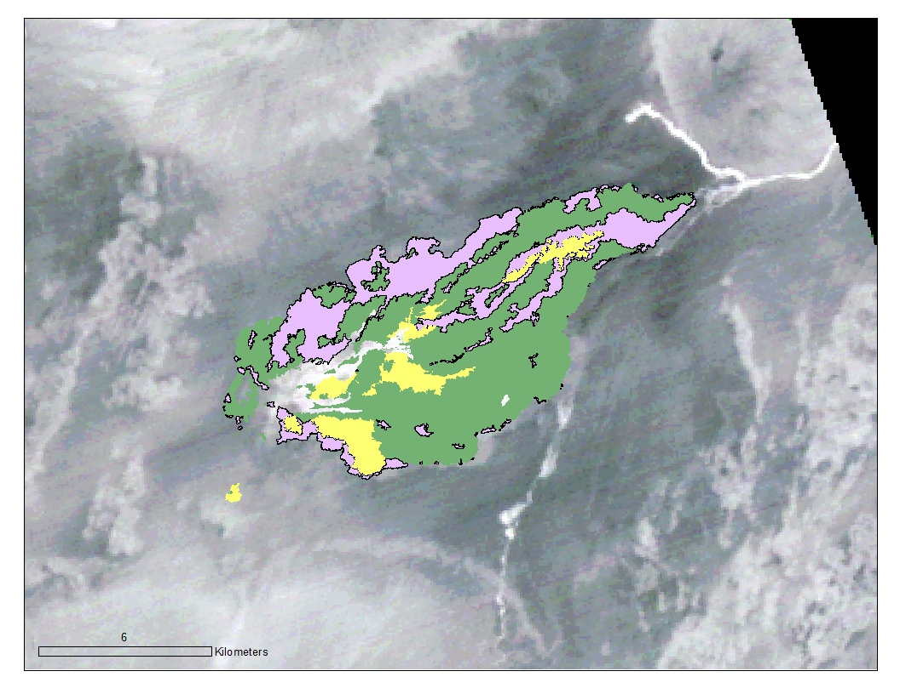

This blog post is going to end up like a research update, as well as a gentle introduction to one of the datasets that I'll be using for the next phase of my research-- data from the Advanced Spaceborne Thermal Emission and Reflection Radiometer, or ASTER. In the post I wrote around mid-December, I talked about wanting to find out how lava flows changed over time in radar, and whether post-emplacement processes such as weathering and dust mantling may be affecting the radar backscatter and surface roughness. To begin to try and understand what processes may be affecting lava flows like that at Holuhraun, we need to look at some data. And if we wanted to think about how sediment and dust may be affecting lava flows, what data would we use? Let's talk about thermal inertia.
Thermal inertia can best be described as the ability of material to retain heat. The textbook example is that of a hot desert highway under the mid-day sun. Imagine some snakes chilling a few meters or so off the side of the road. They're nice and toasty. As the day turns to evening, however, the temperature starts to drop. Snakes like to keep themselves warm, so this is very troubling. Eventually, one of the snakes happens to wriggle their way away from the sandy environs in which they find themselves and start towards the road. There are less cars zipping by now, so it seems safe. The snake makes its way onto the asphalt surface of the road and notices that, hey, it's a lot warmer here than on the desert sands just off the road. This feels pretty nice! The snake calls back to his snake friends. "Hey, you should come on over here! The road's a lot warmer than where you're at!" Then one of the snakes thinks to himself "A talking snake? How long have I been out in the sun? I must've gotten so… baked."

Watch out for snakes using thermal inertia to keep themselves warm.
Basically, material that is more consolidated tends to have a high thermal inertia, while material that is less consolidated tends to have a low thermal inertia. In the case of the above example, the asphalt road had high thermal inertia while the desert sands had lower thermal inertia. Looking at the equation for thermal inertia, we can see why this is the case:

Where k is the thermal conductivity (units of W / m K, watts per meter Kelvin), rho is the density (units of kg / m^3), and c is the specific heat capacity (units of J / kg K, joules per kilogram Kelvin). I has the units J / m^2 K s^(1/2).
From this, we can generally think of surfaces that are composed of larger grain sized, more consolidated, denser materials have a higher thermal inertia than smaller grain sized, less consolidated materials. Thermal inertia can tell us much about the surface of a planetary body, especially one where we lack the ability to "ground-truth." But how can we determine the thermal inertia of a surface through remotely? The answer is thermal infrared radiation (IR), otherwise known as "heat." Thermal IR, also known as mid-IR, has wavelengths in the electromagnetic radiation spectrum from 780 nm to 1 mm. Materials such as asphalt roads, rocks, soils, and sand emit radiation after heating from the sun, and this radiation is reflected in the thermal IR spectrum of material, which can be converted to temperature and thermal inertia.

EarthExplorer window, with the Holuhraun lava flow-field in map view.
The ASTER instrument onboard the Terra satellite has provided thermal IR data coverage for much of the world since its launch in December 1999. In addition to thermal IR, ASTER data also includes the visible and near-infrared (VNIR) and the shortwave infrared (SWIR), each with its own instrument subsystem. For my research, I'll be using extracting values from ASTER thermal IR data and converting to thermal inertia, hopefully getting a sense of how the thermal inertia of the Holuhraun surface has changed over time. The USGS-hosted website EarthExplorer has a plethora of datasets for all of your remote sensing needs, and once you find a dataset of interest, you can use the world map to select a region, then add in any additional criteria for your images. I still need to do some more research into what criteria I'll be needing to consider, as well as in the actual processing of ASTER data--how to get thermal inertia values from the raw RGB values.

Lava facies shapefiles from Voigt et al. (2021) overlain on top of ASTER TIR data for Holuhraun. The green layer is the "rubbly" facies, the purple layer is the "spiny" facies, and the yellow layer is the "undifferentiated" material
Thanks for sticking around to the end! What insights will ASTER reveal about the thermal inertia of Holuhraun? Who knows?!